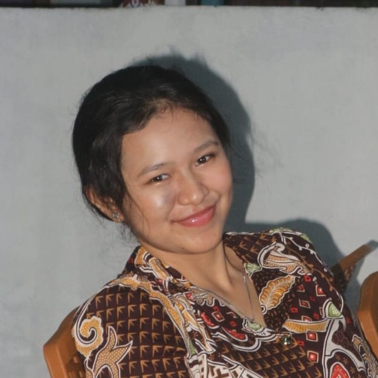

Kelompok Pengembang
RicaHolic adalah salah satu proyek mahasiswa Teknik Informatika Universitas Sam Ratulangi (UNSRAT) Manado. Kami membangun sistem prediksi harga rica berbasis Machine Learning untuk membantu masyarakat Kota Manado mendapatkan informasi harga yang akurat.
Teknik Informatika · UNSRAT Manado · 2024
NIM 240211060009
Teknik Informatika · UNSRAT

NIM 240211060029
Teknik Informatika · UNSRAT
NIM 240211060039
Teknik Informatika · UNSRAT
RicaHolic hadir sebagai solusi informasi harga cabai rawit (rica) di Kota Manado yang selama ini sulit diprediksi karena fluktuasi tinggi. Sistem kami menggunakan model Random Forest dengan akurasi MAPE 6,62% untuk menghasilkan prediksi harga 7 hari ke depan.
Sumber data yang pertama yang digunakan dalam model adalah data cuaca dari situs web resmi data online Meteorologi, Klimatologi, dan Geofisika (BMKG, dataonline.bmkg.go.id) dengan rentang waktu kurang lebih 5 tahun (Januari 2020-Maret 2026). Data kedua adalah data harga cabai rawit merah yang diambil dari situs web resmi Pusat Informasi Harga Pangan Strategis Nasional (PIHPS, www.bi.go.id), dengan rentang waktu kurang lebih sama dengan data curah hujan. Untuk prediksi selanjutnya data cuaca akan diambil langsung dari Open-Meteo API untuk meningkatkan akurasi prediksi.
Model prediksi harga dengan MAPE 6,62%
Backend API dan penyimpanan data
Data cuaca real-time Kota Manado
Frontend tanpa framework, ringan & cepat